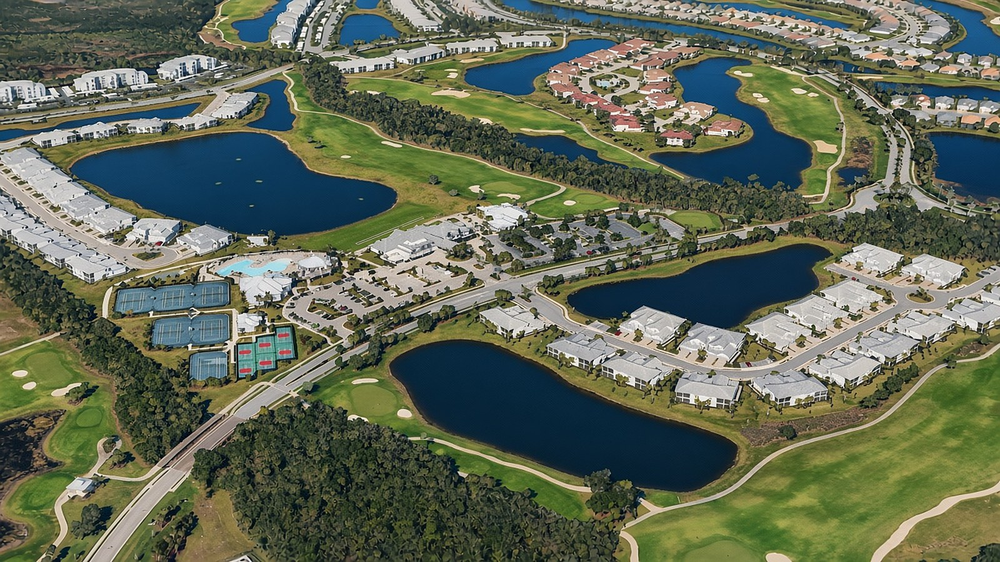
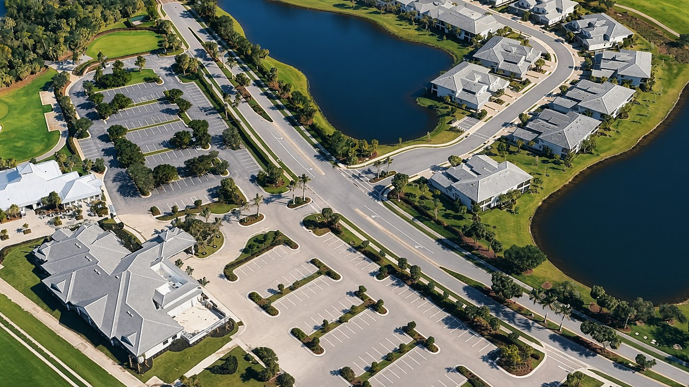

Draft preview for review. Not published. Expand Existing Page for /explore/punta-gorda/heritage-landing/. Goes live 2026-12-03. Images shown from local copies. Rollout batch

Explore · Punta Gorda · Heritage Landing
Heritage Landing is a guard-gated golf community in Punta Gorda, built on the old Tern Bay course and filled in almost entirely since 2020.
If you want new construction, a championship-length course, and resort-style amenities without leaving the Punta Gorda area, it belongs on your list. Here is what to know about Heritage Landing homes for sale, the course, and the costs that come with a planned community. Compare it with Seminole Lakes, an older gated golf community in the city.
The short version
New. About 90 percent of single-family homes were built in 2020 or later.
18 holes, par 71. Remastered by Gordon G. Lewis in 2019 on the former Tern Bay course.
Resort amenities. Pool with lap lanes, restaurants, tennis, pickleball, spa, fitness, guard gate.
CDD plus HOA. The Tern Bay Community Development District meets at the clubhouse.
569
single-family homes on the county roll
2023
median year built
$550,000
median qualified sale, 2025 and 2026
7,122
yards from the black tees
Source: Charlotte County Property Appraiser, parcel file and subdivision list (downloaded Nov 20, 2026); Heritage Landing Golf and Country Club, Course Details.
Golf
From Tern Bay to Heritage Landing.
The course opened in 2007 as the 27-hole Tern Bay Golf and Country Club, designed by Lewis C. "Chip" Powell, and closed in 2008. Architect Gordon G. Lewis remastered it in 2019 into an 18-hole, par-71 layout, reshaping bunkers and rerouting holes. It plays from 4,363 to 7,122 yards.
| Item | Detail |
|---|---|
| Original opening | 2007, as Tern Bay Golf and Country Club (27 holes) |
| Remastered | 2019, by Gordon G. Lewis |
| Holes and par | 18 holes, par 71 |
| Yardage | 7,122 (black) to 4,363 (red) |
| Grass | Champion Paspalum greens, tees, and fairways |
| Pro shop | (941) 347-2222 |
The county roll still carries the original Tern Bay Golf and Country Club Resort plat alongside the Heritage Landing plats, which is why you may see both names on a deed or tax record.
Source: Heritage Landing Golf and Country Club, Course Details; Charlotte County Property Appraiser, parcel file and subdivision list (downloaded Nov 20, 2026).
Amenities
A resort-style club.
The club lists a resort-style pool with gradual entry and lap lanes, three restaurants including an outdoor pool cafe, two full-service bars, tennis, pickleball, bocce, a fitness center and aerobics room, a full-service spa, and a guard-gated entry.
Ask the club and the HOA which amenities come with ownership and which need a separate membership or fee.
Source: Heritage Landing Golf and Country Club.

The Heritage Landing clubhouse area.
Homes
Mostly new single-family homes.
The county roll lists 569 single-family homes across the Heritage Landing and Tern Bay plats. Build years run from 2006 to 2025, with a median of 2023. The median home has about 2,266 square feet; 68 percent carry the county's waterfront flag, mostly lake and pond frontage, and 78 percent have a pool.
The median county just value is about $436,000, with the middle half between about $382,000 and $486,000. Qualified 2025 and 2026 home sales had a median of about $550,000 across 119 sales. With so many homes this new, resales compete directly with builder inventory, so compare both.
County figures come from the Charlotte County Property Appraiser's public parcel file (downloaded November 20, 2026). Just value is the county's market value estimate on the latest certified roll, not an appraisal or a list price. Sale figures use each parcel's most recent recorded sale when that sale was qualified and dated 2025 or 2026.
Source: Charlotte County Property Appraiser, parcel file and subdivision list (downloaded Nov 20, 2026).
Costs
Three separate lines to budget.
Heritage Landing is served by the Tern Bay Community Development District, a local special district whose assessment is collected on the property tax bill. That is separate from homeowners association dues and from any club or golf costs, so ask for all three before you compare homes here with communities that have no CDD.
Our insurance guide and homestead guide cover the rest of the yearly budget.
Source: Tern Bay Community Development District, Meeting Information.
Before you buy
New homes still need checking.
Before buying in Heritage Landing, get the CDD assessment and HOA dues in writing, confirm what the club membership includes, compare a resale against builder pricing and warranties, and pull the flood zone and insurance quotes.
Get the current CDD assessment and HOA budget, and ask about any bond payoff.
Confirm which amenities need a membership and what it costs.
Compare builder incentives and warranties with resale prices.
Lake lots and new construction still need a flood zone check and quotes.
Source: FEMA Flood Map Service Center.
FAQs
Where is Heritage Landing?
Heritage Landing is in Punta Gorda, ZIP 33955. The golf club's address is 14611 Heritage Landing Boulevard.
Who designed the Heritage Landing golf course?
The course first opened in 2007 as the 27-hole Tern Bay Golf and Country Club, designed by Lewis C. "Chip" Powell, and closed in 2008. Gordon G. Lewis remastered it in 2019 into the current 18-hole, par-71 layout.
How long is the Heritage Landing course?
It plays 7,122 yards from the black tees and 4,363 yards from the red tees, per the club.
Does Heritage Landing have a CDD?
Yes. The Tern Bay Community Development District holds its board meetings at the Heritage Landing Clubhouse. A CDD assessment shows up on the property tax bill, separate from any HOA dues.
How new are Heritage Landing homes?
Very new. On the county roll, the median single-family home in Heritage Landing was built in 2023, and about 90 percent were built in 2020 or later.
What amenities does Heritage Landing have?
The club lists a resort-style pool with lap lanes, three restaurants including an outdoor pool cafe, two bars, tennis, pickleball, bocce, a fitness center and aerobics room, a spa, and a guard-gated entry.
Comparing Heritage Landing with other golf communities?
We will line up resales against builder pricing, get the CDD and HOA numbers, and compare it with other Punta Gorda golf communities. Call or text The Helgemo Team at (941) 770-2275.
The office is at 320 Cross Street, Punta Gorda, Florida 33950. You can also meet Brian Helgemo or read more about the team.
Sources: Heritage Landing Golf and Country Club, Course Details; Heritage Landing Golf and Country Club; Tern Bay Community Development District; Charlotte County Property Appraiser, parcel file and subdivision list (downloaded Nov 20, 2026); FEMA Flood Map Service Center. Checked November 20, 2026.